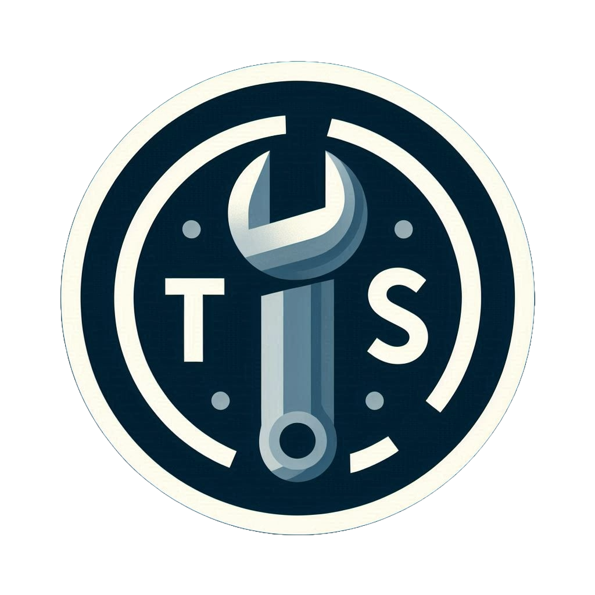

TechSupport
Soluciones Para Computadoras
Barra de Búsqueda
Buscar
Más Buscados
Temperuras Altas: Los signos de un ordenador sobrecalentado incluyen un dispositivo caliente al tacto, un ventilador que funciona a toda marcha y fuertes zumbidos procedentes del equipo
Polvo:La acumulación de polvo puede afectar el rendimiento de tu computador. Ocasiona que los componentes de tu computador adquieran cierta temperatura, disminuyendo así la eficiencia de todo el sistema
Ver Más
Soporte: Telefono: +543512370855 Whatsapp: +543515060828 Email: teoparise@techsupport.com